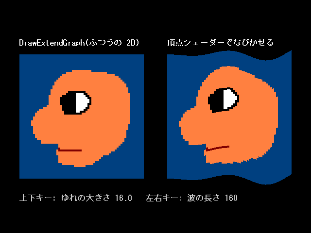
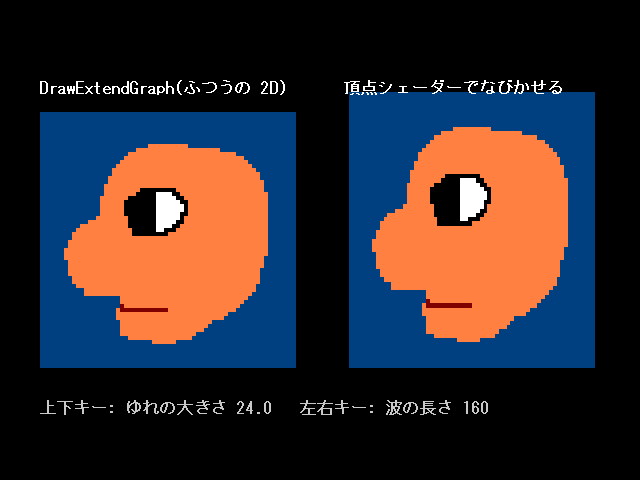

第 06 回
2D の絵を頂点シェーダーで動かす
この回の目標
- 2D の絵を、頂点シェーダーで曲げたり揺らしたりできる。
- 「正射影カメラ + 3D の板」で、2D と同じ見た目のまま 3D の関数で描く方法が分かる。
開くサンプル

samples/D1_Sprite2DVertexShader
テンプレート: templates/06_sprite_vertex.dxtemplate
動かすと、左にふつうに描いた顔、右に旗のようになびく顔が出ます。上下キーでゆれの大きさ、左右キーで波の長さが変わります。
20 フレーム目
 50 フレーム目
50 フレーム目80 フレーム目
110 フレーム目
しくみ
01〜03 の 2D の描画(DrawPolygon2DToShader)では、自分の頂点シェーダーは使えません。DxLib が自分の頂点シェーダーに差し替えてしまいます(仕様書 3.1)。
そこで、絵を 3D の板として描きます。3D の描画(DrawPolygon3DToShader)なら自分の頂点シェーダーが使えます。
ただし、ふつうの 3D のカメラだと遠くの物が小さくなるので、カメラを次のようにします(src/Camera2D.h の SetupCamera2D)。
- 正射影(遠くても小さくならない)
- 3D の座標 1 = 画面の 1 画素、x は右・y は下(
DrawGraphと同じ向き)
こうすると、DrawGraph と 1 画素も違わない絵が、3D の関数で描けます(確かめてあります。仕様書 3.4)。Unity の 2D も同じ考え方です。
読むところ
src/Camera2D.h
SetupCamera2D(): 上のカメラの設定。SetDrawScreenの後に毎回呼ぶ(SetDrawScreenはカメラの設定を元に戻すため)。MakeSpriteGrid( x, y, 幅, 高さ, 横の分け数, 縦の分け数, 色 ): 板の頂点を作る。板を細かいマス目に分けておかないと、なめらかに曲げられません(4 隅だけでは、四角が四角のまま動くだけ)。
shaders/Sprite2DVS.hlsl
HLSL(シェーダー)float wave = sin(pos.x * (6.2831853f / g_WaveLength) - g_Time * g_Speed);
pos.y += wave * g_Amplitude * input.TexCoords0.x;
- 頂点の x の位置と時間で決まる波の分だけ、y をずらします。
TexCoords0.x(左端 0、右端 1)を掛けているので、左端は動かず、右へ行くほど大きく揺れます(旗のさお側を留める)。
shaders/Sprite2DPS.hlsl
HLSL(シェーダー)clip(color.a - 0.5f / 255.0f);
DrawGraph( …, TRUE )と同じく、透明な画素(画像の透過色の黒など)を描かないための 1 行です。無いと透過色が黒く描かれます。- 不透明度は
SetDrawBlendModeの 2 番目の引数では変わらないので、頂点の色のアルファで渡します(MakeSpriteGridの色)。
課題
- ★6-1縦になびかせる(上端を留めて、左右に揺らす)。
- ★★6-2スライムのぷるぷる。下の端を留めて、縦に伸びたら横に縮む、縦に縮んだら横に伸びる。
sin( 時間 * 速さ )を伸び縮みの量にする。 - ★★★6-3絵の中心から広がる波紋。頂点の、絵の中心からの距離で波の値を決める。
解答例: 6-2 → answers/06_slime(【課題 6-2】 の所)
解答例を動かした画面

answers/06_slime(右の顔が、下の端を留めて伸び縮みする)